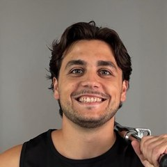
BAUTRUTHS
Entrenador onlineEntrena mejor.No más.
Entrenamiento personalizado para personas con poco tiempo que quieren mejorar su físico sin perder horas en el gimnasio.
Yo pienso tu entrenamiento. Tú solo tienes que ejecutarlo.
QUIERO HABLAR CON SAMUELTe explico cómo funciona y vemos si tiene sentido para ti.
Sin rutinas genéricas · Sin improvisar · Sin vivir en el gimnasio
de éxito
en tu plan
propio
El problema
El problema no es que tengas poco tiempo. Es que probablemente estás desperdiciando parte del que tienes.
Vas al gimnasio, pero…
- No sabes exactamente qué hacer.
- No sabes cuándo subir peso.
- Cambias de rutina constantemente.
- Tienes demasiada información y nadie te dice qué aplicar.
- No quieres convertir el gimnasio en tu segunda casa.
Tener una lista de ejercicios no significa tener un entrenamiento.
Te enseño cómo funciona
En menos de dos minutos ves qué hago por ti, cómo funciona la aplicación y cómo conseguimos que cada sesión tenga un propósito.
Cómo funciona
Tú no necesitas otra rutina. Necesitas saber exactamente qué hacer cuando entrenas.
-
01
Me cuentas tu situación
Objetivo, experiencia, disponibilidad, material y contexto.
-
02
Yo diseño tu entrenamiento
Creo la planificación adaptada a ti.
-
03
Tú abres la app y entrenas
Todo está preparado: ejercicios, series, repeticiones, descansos, intensidad y vídeos.
-
04
Analizamos y progresamos
Registras tus sesiones. Yo reviso tu evolución y ajusto cuando sea necesario.
Esto es BAUTRUTHS.
La app
Esto es lo que ves cuando llegas al gimnasio. No tienes que pensar qué toca: abres la aplicación y tienes delante el entrenamiento que toca hacer.
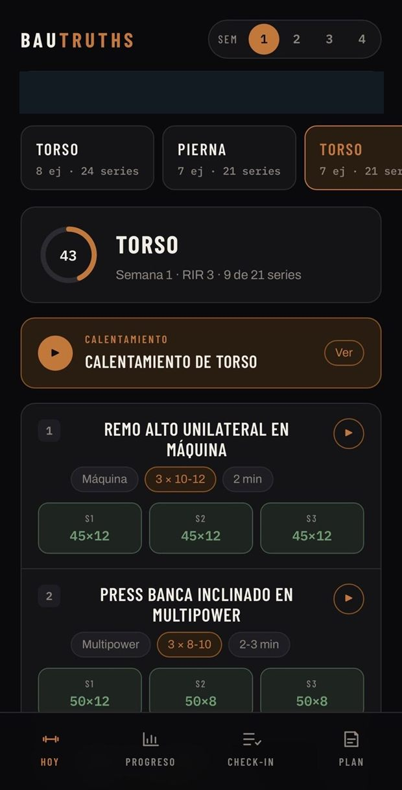
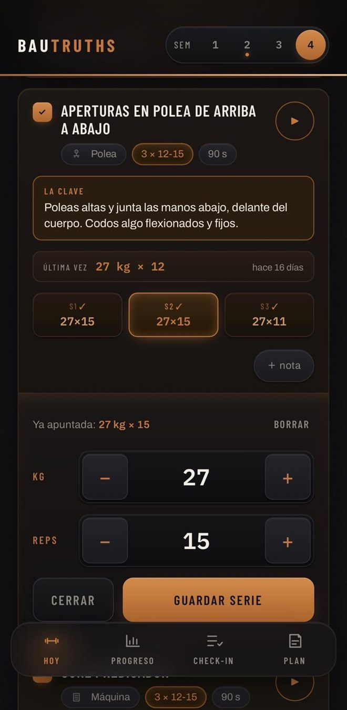
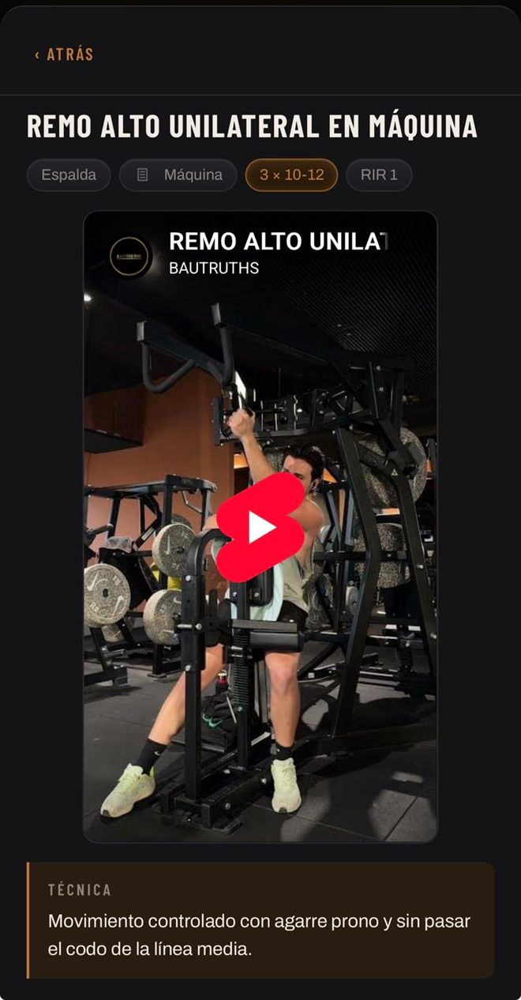
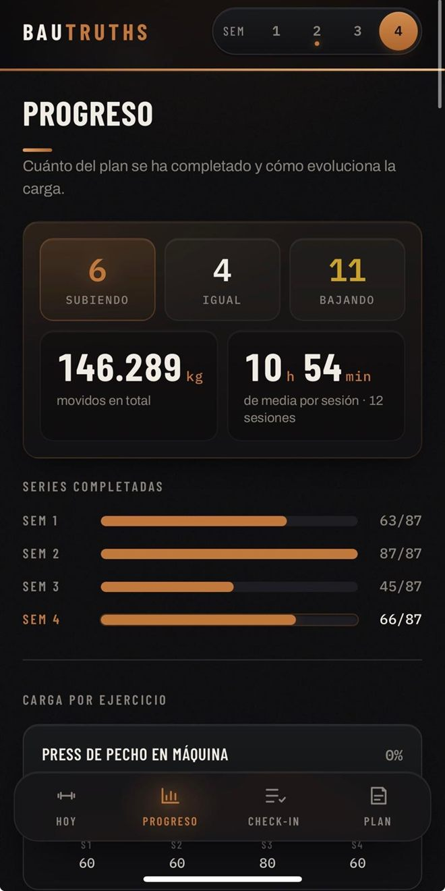
- Series y repeticiones
- Intensidad (RIR)
- Descansos
- Vídeos de ejecución
Seguimiento
Y no desaparezco después de darte la rutina.
Tus entrenamientos generan información. La reviso para saber cómo estás progresando y decidir cuándo necesitamos ajustar el plan.
Entrenas → registras → reviso → ajustamos → progresas
QUIERO CONTARTE MI CASOPersonas que ya entrenan conmigo
No tienes que creerme. Mira lo que dicen quienes ya entrenan conmigo.
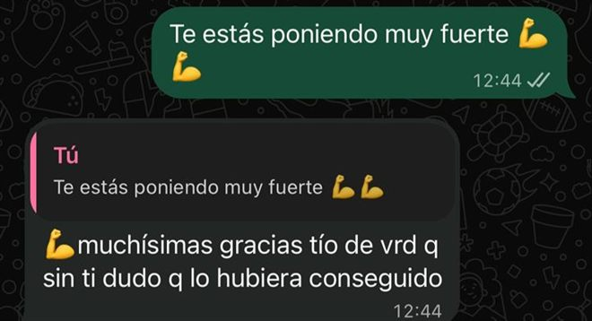
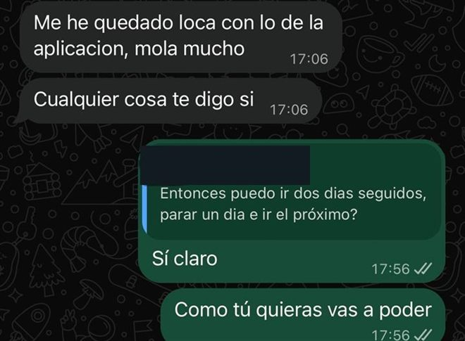
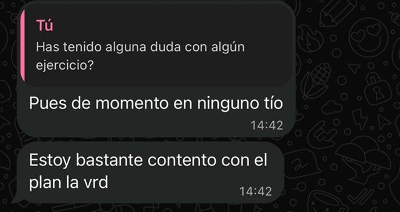
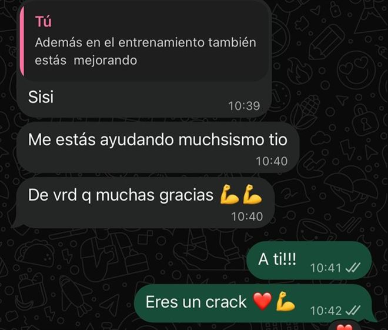
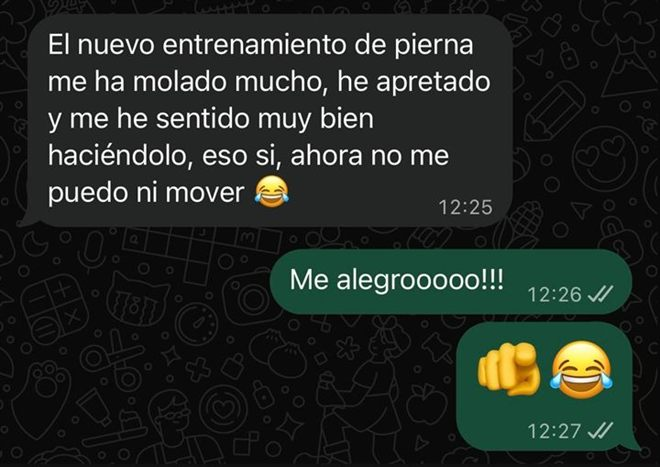
Conversaciones reales con clientes de BAUTRUTHS. Sin nombres, por respeto a ellos.
Y sí, los resultados también hablan
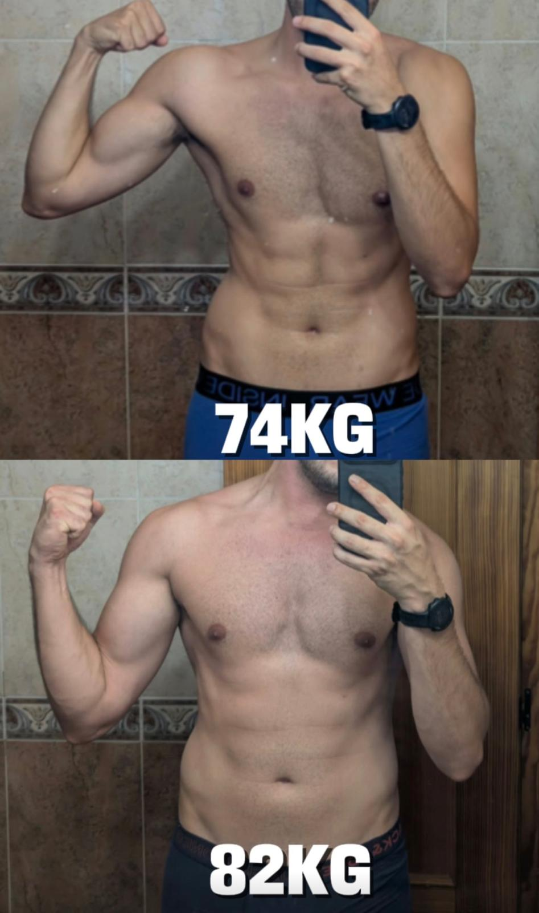
Quién te va a contestar
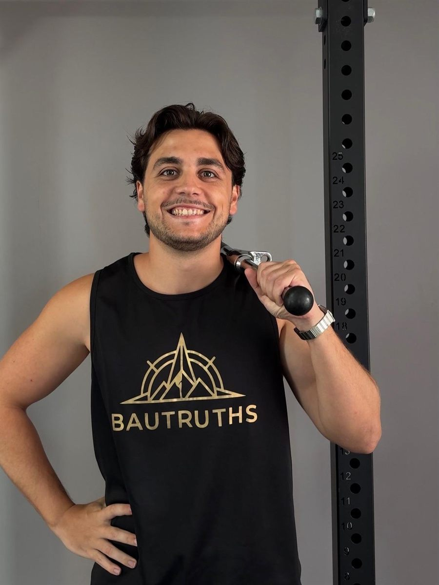
Soy Samuel. Y mi trabajo es que el gimnasio deje de ser un lío.
Soy entrenador personal, graduado en Ciencias de la Actividad Física y el Deporte.
Mi objetivo con BAUTRUTHS es sencillo: utilizar la evidencia y mi experiencia para decidir qué merece la pena hacer y convertirlo en un entrenamiento que puedas ejecutar sin complicarte la vida.
¿Es para ti?
BAUTRUTHS es para ti si…
- Tienes poco tiempo para entrenar.
- Quieres mejorar tu físico.
- Estás cansado de improvisar.
- No sabes si estás entrenando correctamente.
- Quieres que alguien se encargue de estructurar tu entrenamiento.
Y no es para ti si…
- Quieres una rutina genérica.
- Buscas resultados sin entrenar.
- No estás dispuesto a ser constante.
Qué contratas
12 semanas para dejar de improvisar tus entrenamientos
Entrenamiento personalizado 1:1, online.
- Tu planificación hecha a mano, no una plantilla
- Tu app con el entrenamiento de cada día
- Series, repeticiones e intensidad marcadas
- Cada ejercicio con mi vídeo
- Reviso lo que registras y ajusto el plan
- WhatsApp directo conmigo
220 €las 12 semanas
o en dos pagos de 130 €
Todo lo que necesitas para saber qué hacer, cómo hacerlo y cómo progresar durante 12 semanas.
QUIERO HABLAR CON SAMUELEscribirme no cuesta nada. Te digo cómo lo haría en tu caso y decides.
Preguntas frecuentes
¿Necesito experiencia entrenando?
No. El plan se adapta a tu nivel, empieces por donde empieces.
¿Cuántos días tengo que entrenar?
Depende de tu situación y de tu objetivo. La planificación se adapta a los días que tengas de verdad, no a los que te gustaría tener.
¿Necesito gimnasio?
Lo ideal es que tengas acceso al material que pide tu objetivo, pero eso lo vemos según tu caso. Entreno online: tú entrenas donde te venga bien.
¿Cómo es el seguimiento?
Registras tus entrenamientos, yo reviso tu evolución y ajusto la planificación cuando hace falta. Y me escribes directamente por WhatsApp.
¿Qué pasa después de las 12 semanas?
Al acabar lo vemos juntos: si quieres seguir, renovamos otras 12 semanas.
¿Quieres dejar de improvisar tus entrenamientos?
Cuéntame qué quieres conseguir, cuánto tiempo tienes y cómo estás entrenando actualmente. Te responderé personalmente.
QUIERO CONTARTE MI CASO- Sin formularios
- Sin llamadas
- Sin compromiso
Si lo prefieres, por Instagram.